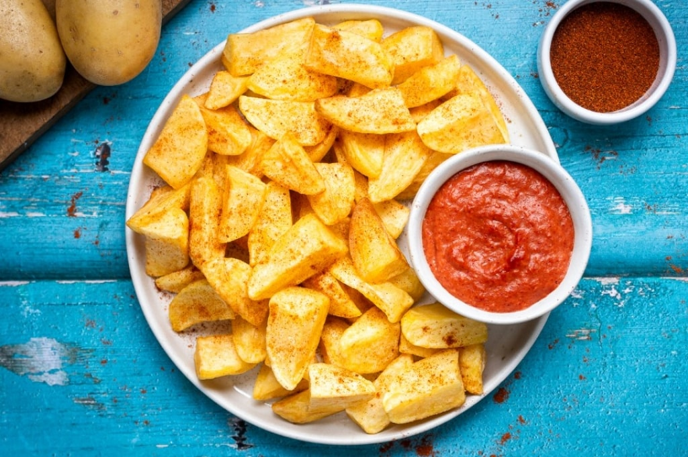

Bravas potatoes
 4 items
4 items 45 mins
45 mins Source
Source Veggie
Veggie Salty
Salty

1onion1 clovegarlic2 tbspflour2 gred chili powder2 tbspextra virgin olive oil
Start preparing the patatas bravas with the sauce: clean and finely chop the onion with the garlic and brown them in a saucepan with the oil. Add a little salt and the chili pepper. After 1 minute add the flour and stir, cooking for a couple of minutes.
300 mLwater
Add the water and cook until the sauce thickens. Then transfer it to a tall container and blend with an immersion blender until you get a smooth sauce. Set aside.
1 kgpotatoes
Peel and wash the potatoes, dry them, cut them into wedges and then each wedge in half.
- peanut oil for frying
- paprika
- salt
Fry the potatoes in boiling peanut oil, drain with a slotted spoon and place on absorbent paper. Season immediately with paprika and salt and serve the patatas bravas with the sauce.